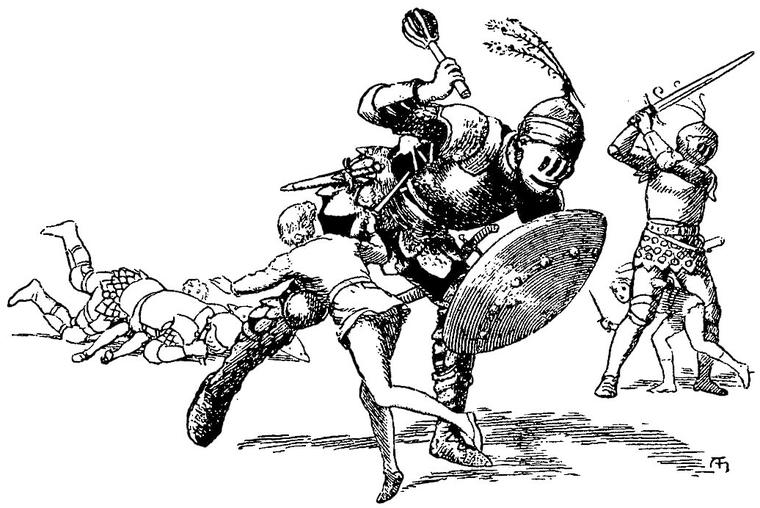
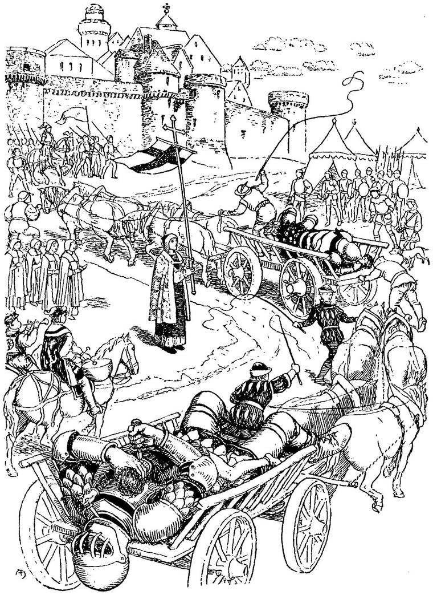

“I put my life in my hands.”
The Book of Judges.
At length, with much toil and equal delight, our armour was finished. We armed each other, and tested the strength of the defence, with many blows of loving force. I was inferior in strength to both my brothers, but a little more agile than either; and upon this agility, joined to precision in hitting with the point of my weapon, I grounded my hopes of success in the ensuing combat. I likewise laboured to develop yet more the keenness of sight with which I was naturally gifted; and, from the remarks of my companions, I soon learned that my endeavours were not in vain.
The morning arrived on which we had determined to make the attempt, and succeed or perish—perhaps both. We had resolved to fight on foot; knowing that the mishap of many of the knights who had made the attempt, had resulted from the fright of their horses at the appearance of the giants; and believing with Sir Gawain, that, though mare’s sons might be false to us, the earth would never prove a traitor. But most of our preparations were, in their immediate aim at least, frustrated.
We rose, that fatal morning, by daybreak. We had rested from all labour the day before, and now were fresh as the lark. We bathed in cold spring water, and dressed ourselves in clean garments, with a sense of preparation, as for a solemn festivity. When we had broken our fast, I took an old lyre, which I had found in the tower and had myself repaired, and sung for the last time the two ballads of which I have said so much already. I followed them with this, for a closing song:
With the blow that ends the strife
And, waking, knows the peace that flows
Around the pain of life!
As an armour, our souls about;
This hand is the battle-axe I grasp,
And this my hammer stout.
No noise can break our rest;
The calm of the grave is about the head,
And the heart heaves not the breast.
To live with, a further store;
We leave it them, that there be no lack
In the land where we live no more.
With the blow that ends the strife
And, waking, knows the peace that flows
Around the noise of life!
As the last few tones of the instrument were following, like a dirge, the death of the song, we all sprang to our feet. For, through one of the little windows of the tower, towards which I had looked as I sang, I saw, suddenly rising over the edge of the slope on which our tower stood, three enormous heads. The brothers knew at once, by my looks, what caused my sudden movement. We were utterly unarmed, and there was no time to arm.
But we seemed to adopt the same resolution simultaneously; for each caught up his favourite weapon, and, leaving his defence behind, sprang to the door. I snatched up a long rapier, abruptly, but very finely pointed, in my sword-hand, and in the other a sabre; the elder brother seized his heavy battle-axe; and the younger, a great, two-handed sword, which he wielded in one hand like a feather. We had just time to get clear of the tower, embrace and say good-bye, and part to some little distance, that we might not encumber each other’s motions, ere the triple giant-brotherhood drew near to attack us. They were about twice our height, and armed to the teeth. Through the visors of their helmets their monstrous eyes shone with a horrible ferocity. I was in the middle position, and the middle giant approached me. My eyes were busy with his armour, and I was not a moment in settling my mode of attack. I saw that his body-armour was somewhat clumsily made, and that the overlappings in the lower part had more play than necessary; and I hoped that, in a fortunate moment, some joint would open a little, in a visible and accessible part. I stood till he came near enough to aim a blow at me with the mace, which has been, in all ages, the favourite weapon of giants, when, of course, I leaped aside, and let the blow fall upon the spot where I had been standing. I expected this would strain the joints of his armour yet more. Full of fury, he made at me again; but I kept him busy, constantly eluding his blows, and hoping thus to fatigue him. He did not seem to fear any assault from me, and I attempted none as yet; but while I watched his motions in order to avoid his blows, I, at the same time, kept equal watch upon those joints of his armour, through some one of which I hoped to reach his life. At length, as if somewhat fatigued, he paused a moment, and drew himself slightly up; I bounded forward, foot and hand, ran my rapier right through to the armour of his back, let go the hilt, and passing under his right arm, turned as he fell, and flew at him with my sabre. At one happy blow I divided the band of his helmet, which fell off, and allowed me, with a second cut across the eyes, to blind him quite; after which I clove his head, and turned, uninjured, to see how my brothers had fared. Both the giants were down, but so were my brothers. I flew first to the one and then to the other couple. Both pairs of combatants were dead, and yet locked together, as in the death-struggle. The elder had buried his battle-axe in the body of his foe, and had fallen beneath him as he fell. The giant had strangled him in his own death-agonies. The younger had nearly hewn off the left leg of his enemy; and, grappled with in the act, had, while they rolled together on the earth, found for his dagger a passage betwixt the gorget and cuirass of the giant, and stabbed him mortally in the throat. The blood from the giant’s throat was yet pouring over the hand of his foe, which still grasped the hilt of the dagger sheathed in the wound. They lay silent. I, the least worthy, remained the sole survivor in the lists.
As I stood exhausted amidst the dead, after the first worthy deed of my life, I suddenly looked behind me, and there lay the Shadow, black in the sunshine. I went into the lonely tower, and there lay the useless armour of the noble youths—supine as they.
Ah, how sad it looked! It was a glorious death, but it was death. My songs could not comfort me now. I was almost ashamed that I was alive, when they, the true-hearted, were no more. And yet I breathed freer to think that I had gone through the trial, and had not failed. And perhaps I may be forgiven, if some feelings of pride arose in my bosom, when I looked down on the mighty form that lay dead by my hand.
“After all, however,” I said to myself, and my heart sank, “it was only skill. Your giant was but a blunderer.”
I left the bodies of friends and foes, peaceful enough when the death-fight was over, and, hastening to the country below, roused the peasants. They came with shouting and gladness, bringing waggons to carry the bodies. I resolved to take the princes home to their father, each as he lay, in the arms of his country’s foe. But first I searched the giants, and found the keys of their castle, to which I repaired, followed by a great company of the people. It was a place of wonderful strength. I released the prisoners, knights and ladies, all in a sad condition, from the cruelties and neglects of the giants. It humbled me to see them crowding round me with thanks, when in truth the glorious brothers, lying dead by their lonely tower, were those to whom the thanks belonged. I had but aided in carrying out the thought born in their brain, and uttered in visible form before ever I laid hold thereupon. Yet I did count myself happy to have been chosen for their brother in this great deed.
After a few hours spent in refreshing and clothing the prisoners, we all commenced our journey towards the capital. This was slow at first; but, as the strength and spirits of the prisoners returned, it became more rapid; and in three days we reached the palace of the king. As we entered the city gates, with the huge bulks lying each on a waggon drawn by horses, and two of them inextricably intertwined with the dead bodies of their princes, the people raised a shout and then a cry, and followed in multitudes the solemn procession.

I will not attempt to describe the behaviour of the grand old king. Joy and pride in his sons overcame his sorrow at their loss. On me he heaped every kindness that heart could devise or hand execute. He used to sit and question me, night after night, about everything that was in any way connected with them and their preparations. Our mode of life, and relation to each other, during the time we spent together, was a constant theme. He entered into the minutest details of the construction of the armour, even to a peculiar mode of riveting some of the plates, with unwearying interest. This armour I had intended to beg of the king, as my sole memorials of the contest; but, when I saw the delight he took in contemplating it, and the consolation it appeared to afford him in his sorrow, I could not ask for it; but, at his request, left my own, weapons and all, to be joined with theirs in a trophy, erected in the grand square of the palace. The king, with gorgeous ceremony, dubbed me knight with his own old hand, in which trembled the sword of his youth.
During the short time I remained, my company was, naturally, much courted by the young nobles. I was in a constant round of gaiety and diversion, notwithstanding that the court was in mourning. For the country was so rejoiced at the death of the giants, and so many of their lost friends had been restored to the nobility and men of wealth, that the gladness surpassed the grief. “Ye have indeed left your lives to your people, my great brothers!” I said.
But I was ever and ever haunted by the old shadow, which I had not seen all the time that I was at work in the tower. Even in the society of the ladies of the court, who seemed to think it only their duty to make my stay there as pleasant to me as possible, I could not help being conscious of its presence, although it might not be annoying me at the time. At length, somewhat weary of uninterrupted pleasure, and nowise strengthened thereby, either in body or mind, I put on a splendid suit of armour of steel inlaid with silver, which the old king had given me, and, mounting the horse on which it had been brought to me, took my leave of the palace, to visit the distant city in which the lady dwelt, whom the elder prince had loved. I anticipated a sore task, in conveying to her the news of his glorious fate: but this trial was spared me, in a manner as strange as anything that had happened to me in Fairy Land.